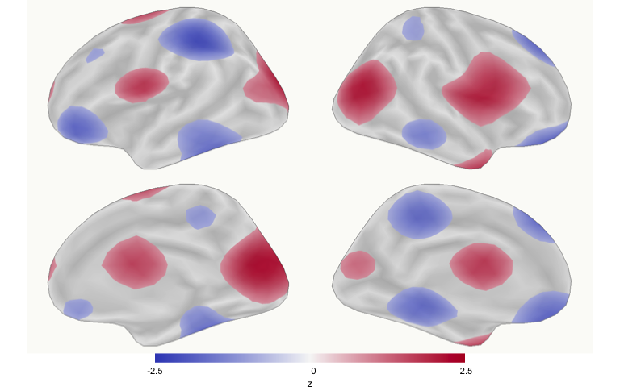

Documentation · Reference · News
neurosurf is an R package for cortical surface data. It reads FreeSurfer, GIFTI, and AFNI/SUMA meshes, keeps vertex-wise values attached to their geometry, and turns them into publication figures and self-contained interactive HTML reports.
Status: Pre-release (0.1.0.9001) and not on CRAN. APIs may change.
Installation
Install a prebuilt binary from r-universe:
install.packages("neurosurf",
repos = c("https://bbuchsbaum.r-universe.dev", "https://cloud.r-project.org")
)or build the development version from GitHub (requires a C++ toolchain):
# install.packages("remotes")
remotes::install_github("bbuchsbaum/neurosurf")Quick start
Render a thresholded map on both hemispheres of the bundled fsaverage surface:
library(neurosurf)
surf <- load_fsaverage_std8("inflated")
white <- load_fsaverage_std8("white")
# Any numeric vector with one value per vertex; here a synthetic z-map
zmap <- function(g) {
xyz <- coords(g)
as.numeric(scale(sin(xyz[, 2] / 18) + cos(xyz[, 3] / 14) + 0.7 * sin(xyz[, 1] / 12)))
}
fig <- surface_figure(
lh = surf$lh, rh = surf$rh,
values = list(lh = zmap(surf$lh), rh = zmap(surf$rh)),
anatomy = list(lh = curvature(white$lh), rh = curvature(white$rh)),
threshold = 1, limits = c(-2.5, 2.5), legend_title = "z"
)
plot(fig)
write_surface_figure(fig, "figure.png") saves the same figure. Rendering runs on the CPU, so it works identically on a laptop, a cluster node, or CI, with no OpenGL device or browser.
What it covers
-
Read and write surfaces and data: FreeSurfer, GIFTI, AFNI/SUMA, and NIML (
read_surf(),read_surf_geometry(),write_surf_data()), plus bundled fsaverage templates (load_fsaverage(),load_fsaverage_std8()). -
Map volumes to surfaces: sample a volumetric image onto a mesh with
vol_to_surf()orvol_to_surf_sdf(). - Analyse on the mesh: smoothing, curvature, geodesic distances, neighbourhood graphs, cluster thresholding, and ROI boundaries.
-
Surface searchlights for multivariate pattern analysis (
SurfaceSearchlight(),RandomSurfaceSearchlight()). -
Figures: headless, deterministic multi-view figures (
surface_figure()), and interactive rgl display (view_surface()). -
Interactive reports: combine both hemispheres and several named maps in one
surface_scene(), show it withsurfwidget()in R Markdown or Quarto, or write it as a standalone HTML page withwrite_surface_scene(). The viewer is bundled, so reports need no CDN or network access.
Volumetric data structures come from neuroim2.
Documentation
- Introduction to neurosurf data structures: geometry, vertex data, and the core classes.
- Publication-quality surface figures: static figures for papers.
- Bilateral interactive surface reports: browser-based reports with several maps.
- Displaying surfaces with rgl: interactive exploration from an R session.
- Function reference.
Contributing
See CONTRIBUTING.md, including how to rebuild the bundled JavaScript viewer. Bug reports go to the issue tracker.